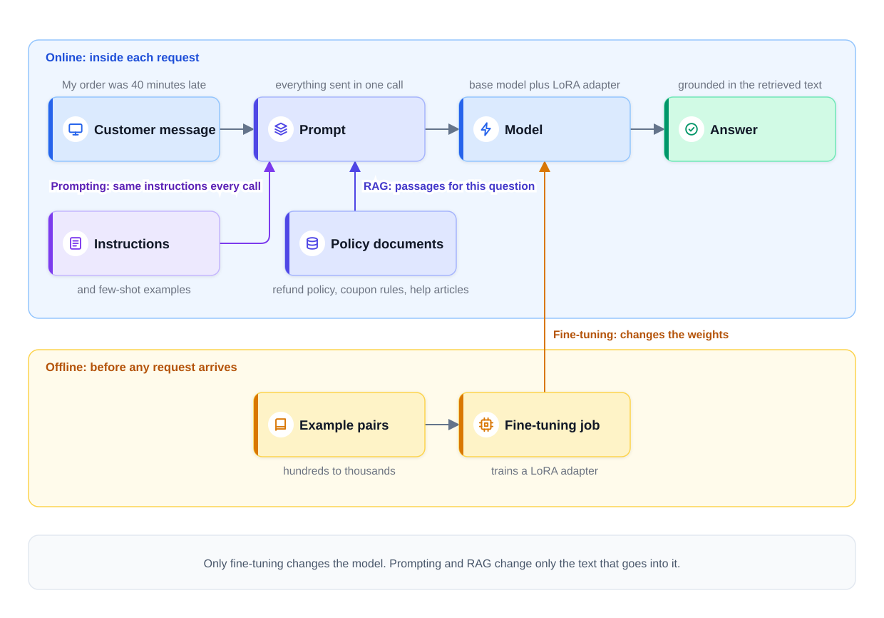
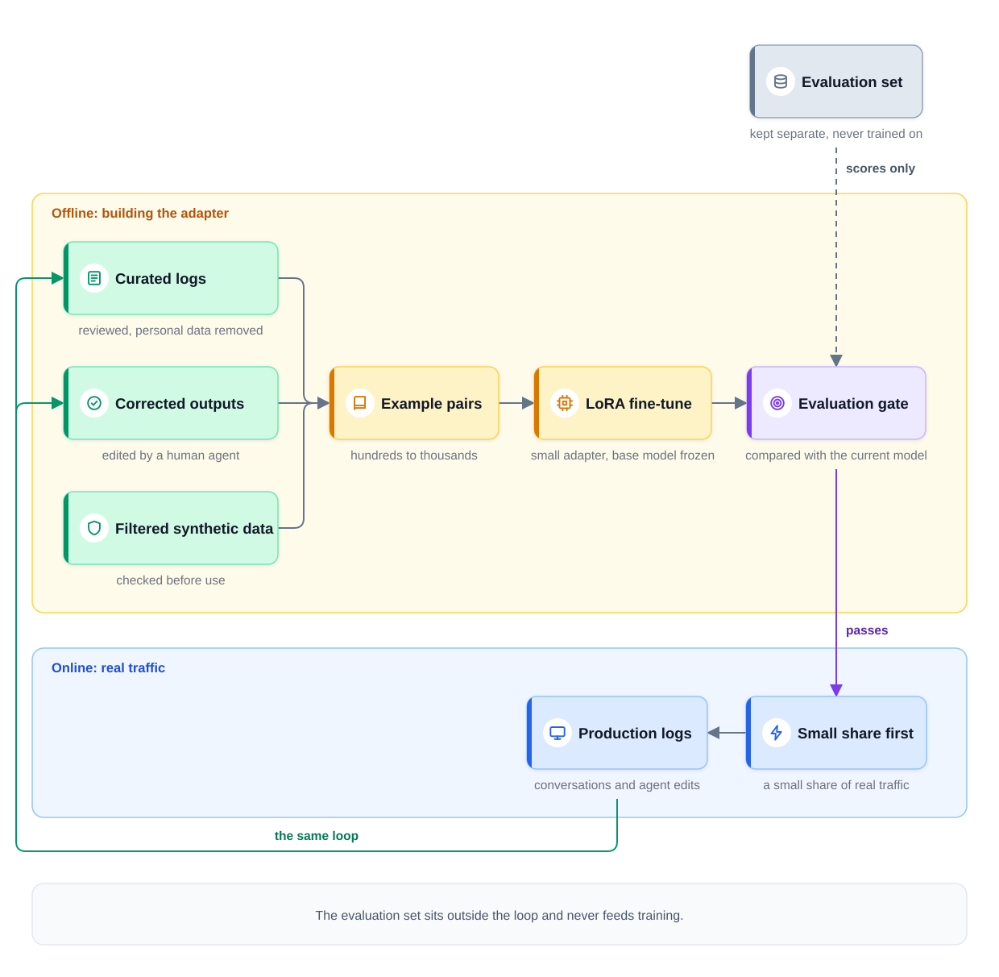
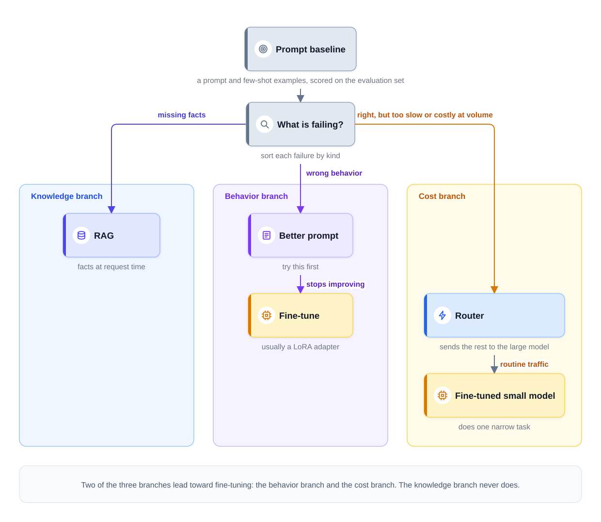

0% completed
Prompting, Fine-Tuning, or RAG
On This Page
Know the Vocabulary
Part 1: Three Tools for Three Different Problems
The Fastest Way to Fail
Part 2: Where Each Tool Acts
Part 3: Prompting Is Always Where You Start
Prompting's Ceiling
Part 4: RAG Supplies Knowledge at Request Time
What RAG Does Well
What RAG Costs
RAG Reduces Hallucination but Does Not End It
Part 5: Fine-Tuning Changes Behavior in the Weights
What Fine-Tuning Is Not
Fine-Tuning Can Compress a Prompt
LoRA Is the Practical Default
Evaluation Comes Before Fine-Tuning
Where Fine-Tuning Data Comes From
Why Fine-Tuning Is the Wrong Tool for Facts
Part 6: Diagnose First, Then Choose
The Cost Branch Is an Economic Decision
A Tricky Case: Made-Up Policy Details
Splitting a Mixed Plan
Part 7: Combining the Tools
Part 8: Beyond Fine-Tuning
Part 9: Using This in an Interview
Part 10: Common Mistakes
Mistake 1: Treating the Tools as a Ladder
Mistake 2: Fine-Tuning for Facts
Mistake 3: Fine-Tuning With No Evaluation Set
Mistake 4: Putting Permissions in the Model
Mistake 5: Assuming RAG Ends Hallucination
Mistake 6: Proposing to Train Your Own LLM
FAQs
Key Takeaways
Check Your Understanding
Know the Vocabulary
This lesson uses the terms below many times. Read them once now, and come back here when a later section needs one.
- Base model: A general-purpose large language model (LLM) that its maker trained on a huge amount of text. You adapt it to your product; you do not build it.
- Prompt: Everything sent to the model in one call. It holds instructions, examples, the conversation so far, and any documents.
- Token: The unit of text a model reads and writes, roughly three-quarters of an English word. Providers charge for every token sent and returned.
- Few-shot examples: A handful of sample inputs, each with its ideal output, placed in the prompt. They show the model what a good answer looks like.
- Retrieval-augmented generation (RAG): A design that searches your own documents for each request. It puts the most relevant passages into the prompt before the model answers.
- Grounded: A RAG answer is grounded when it is based on the retrieved text, not just on what the model remembers from training.
- Hallucination: A fluent answer that is wrong, or that no source supports.
- Weights: The learned numbers inside a model. Training changes them, but a prompt does not.
- Fine-tuning: Training a base model further on your own examples, so that its weights change.
- LoRA (low-rank adaptation): A fine-tuning method that trains small adapter layers and leaves the base model's own weights unchanged.
- Evaluation set: A fixed set of test cases with good answers or scoring rules. Every version of the system runs on it, so versions can be compared. The next lesson calls it the golden set.
- Router: A component that sends each request to one of several models, such as a cheap small model for easy requests.
Part 1: Three Tools for Three Different Problems
Go back to the food-delivery company from Module 1's capstone. It chose to build a support assistant. The assistant answers questions about orders, refunds, and coupons. The capstone assumed about 40,000 conversations a day.
The company will not build its own language model. It will start from a base model, through a hosted API or on its own servers. But a base model knows nothing about this company. It has never read the refund policy. It does not know the brand's tone. It does not know the summary format that human agents expect when a chat is handed to them.
So the design must adapt the model to the product. There are three tools for this: prompting, RAG, and fine-tuning.
- Prompting changes what you tell the model in each call.
- RAG changes what the model can read in each call, by fetching documents first.
- Fine-tuning changes the model itself, by training its weights further.
The Fastest Way to Fail
Many candidates picture the three tools as rungs on one ladder. In this picture, prompting is the bottom rung, RAG is the middle rung, and fine-tuning is the top rung. If one rung does not work, you climb to the next. Each rung is a stronger version of the same fix.
That picture is wrong, and it is the fastest way to fail this question. The three tools are not interchangeable, and they are not stronger and weaker forms of one fix, because they solve different problems. Fine-tuning is the wrong fix for a knowledge problem, as Part 5 explains. RAG will not fix a tone problem, however many documents you fetch.
Here is the clean separation.
- RAG changes what the model knows when it answers. It supplies facts at request time.
- Fine-tuning changes how the model behaves. It shapes tone, format, and narrow skills.
- Prompting does a little of both, and it is always where you start.
So the real question is not which tool is best. The real question is what exactly is failing. Name the failure first, and the tool usually follows.
Part 2: Where Each Tool Acts
Each tool changes a different part of the system. Prompting and RAG act online, inside each request. Fine-tuning acts offline, before any request arrives.
The diagram below shows one support request and the place where each tool acts on it.

Notice that only fine-tuning changes the model. Prompting and RAG change only the text that goes into it. That is why a prompt or a document can change in minutes. A fine-tuned model needs a training run, an evaluation, and a careful release.
Part 3: Prompting Is Always Where You Start
Prompting means writing instructions for the model and sending them with every request. For the support assistant, the instructions might say: "You are a support agent for a food-delivery app. Be brief and polite. Never promise a refund above $10. If you are unsure, hand the chat to a human."
You can also add few-shot examples. These are a handful of sample customer messages, each with an ideal reply. Examples often show a format or a tone more clearly than a description can.
Prompting plus a handful of few-shot examples is always the first step, for three reasons.
- It is cheap to try, because a new prompt takes minutes to write and needs no training data.
- It is easy to undo, because a bad prompt is rolled back like any configuration change.
- It sets the baseline. Every later tool must beat a well-written prompt on the same evaluation set. Module 1's framework gives the same rule: start with an existing model and clear instructions.
Prompting's Ceiling
Prompting has two limits.
First, instructions cost tokens on every call. The model keeps no memory between calls, so the instructions are sent again each time. Suppose the support prompt grows to 2,000 tokens. With 40,000 conversations and about ten model calls each, there are 400,000 calls a day. The instructions alone then add 800 million input tokens a day.
Inference Economics uses an assumed rate of
Second, instructions cannot teach the model new facts. An instruction tells the model how to act. It cannot give the model knowledge it does not have. The model has never seen this company's refund policy, so no instruction makes it know that policy.
You could paste the facts into the prompt. But a whole help center may not fit in one call. Even if it fits, sending all of it with every call costs too much. So you must choose which facts to send with each question. Choosing them is retrieval, which is the next tool.
Part 4: RAG Supplies Knowledge at Request Time
In RAG, the system searches your documents for each request and picks the most relevant passages. It puts those passages into the prompt, and then the model writes its answer from them.
For the support assistant, the documents are the refund policy, the coupon rules, and the help-center articles. A customer asks, "My order was 40 minutes late. Can I get a refund?" Retrieval finds the late-delivery section of the refund policy. The model reads that section and answers from it.
A RAG answer is grounded when the model bases its answer on the retrieved text, not just on its training memory. Grounding is the main purpose of RAG. The RAG Pipeline walks through every stage of this request path.
What RAG Does Well
RAG is the right tool for knowledge problems, for three reasons.
- Updates take effect right away. Edit a policy document, and the very next answer that retrieves it uses the new text, with no retraining. The only wait is for the index, the searchable copy of the documents, to pick up the edit. That delay is a design target of its own, as Chunking and Indexing explains.
- Access control works, because retrieval can filter documents for each user before the model sees them. Internal agent notes can stay hidden from customers. Capstone: Enterprise Document Q&A builds a whole design around this filter.
- Answers can cite sources, so a reviewer can check each answer against the passage it used.
What RAG Costs
RAG is not free, and it has three real costs.
- A retrieval subsystem to build. Documents must be parsed, split into passages, indexed, and kept in sync with their sources. Someone must run all of this.
- Longer prompts. Every request carries the retrieved passages. Each call has more input tokens, so it costs more and takes longer to start answering.
- Quality capped by retrieval. If retrieval misses the right passage, the model cannot use it. Even a strong model cannot give the right answer from the wrong passage.
RAG Reduces Hallucination but Does Not End It
A model with the right passage in front of it makes up fewer details. But it can still misread the passage, mix two passages together, or add a detail that no passage contains. So RAG reduces hallucination, but it does not eliminate it.
Retrieval alone does not complete the grounding. Instruct the model to answer only from the provided context, and to cite the source of each claim. Tell it to say so when the context does not contain the answer, and then check its citations. Keeping Answers Grounded builds these checks layer by layer.
Part 5: Fine-Tuning Changes Behavior in the Weights
Fine-tuning trains a base model further on your own examples. Each example pairs an input with the output you want. One pair might be a customer message and the ideal reply. Another might be a chat transcript and the ideal handoff summary. A useful fine-tune often needs hundreds to thousands of example input and output pairs. Training adjusts the weights so that the model's outputs look like the examples.
Fine-tuning changes behavior, and it works well for three kinds of problems.
- Tone and style, such as the brand's short, warm voice.
- Format, such as a handoff summary that always has the same five fields.
- Narrow skills, such as labeling each message with one of twelve support intents.
What Fine-Tuning Is Not
Fine-tuning is not a way to load documents into a model. It learns patterns from examples, not a library of facts it can look up.
Fine-tuning is not a one-time job. When the product changes, the examples change, and the model must be trained, tested, and released again.
Fine-tuning is not a fix for an unclear task. If the team cannot write down what a good answer looks like, it cannot build good examples either.
Fine-Tuning Can Compress a Prompt
Fine-tuning can move instructions out of the prompt and into the weights. Recall the 2,000-token prompt from Part 3. Suppose it holds formatting and tone rules. A model fine-tuned on examples that follow those rules can learn to follow them without being told. The prompt becomes much shorter, and every call becomes cheaper.
At high volume, this saving is real. But it works for behavior only. Part 6 shows what happens when the same prompt also holds facts.
LoRA Is the Practical Default
Full fine-tuning updates every weight in the model. It needs a lot of GPU memory, and it produces a whole new copy of the model.
LoRA takes a cheaper path, because it freezes the base model and trains only small adapter layers added to it. An adapter is often a small fraction of the model's size. Some serving engines can keep one base model in memory and apply a different adapter for each task.
So LoRA is the practical default for most product fine-tunes. It is cheaper to train, cheaper to store, and easier to swap. Full fine-tuning is kept for cases where measured results show that adapters are not enough.
Evaluation Comes Before Fine-Tuning
You cannot tell whether a fine-tune worked without an evaluation setup. That setup means an evaluation set, scoring rules, and the prompted model's score as the baseline, all built first. Without them, a fine-tune is a guess with a training bill.
The evaluation set must also test skills the base model already had. Fine-tuning on a narrow task can weaken other skills, such as following instructions or refusing unsafe requests. So score the tuned model on its new task and on its old duties. Evaluating LLM Systems shows how to build such a setup.
Where Fine-Tuning Data Comes From
The best examples come from your own product. They arrive through the same loop from Monitoring, Drift, and Retraining, where production data becomes the next training set. Three sources are common.
- Curated logs. These are good real conversations, chosen by quality signals and reviewed. Personal data is removed, and only data that users allowed for training is used.
- Corrected outputs. These are answers that a human agent edited before sending. The edited version becomes the target output.
- Filtered synthetic data. These are examples written by a larger model, then filtered by automatic checks and human review. Unfiltered synthetic data can teach the small model the large model's mistakes. Also check that the larger model's terms of use allow training on its outputs.
Keep the evaluation set separate from the training examples. A model tested on its own training examples always looks better than it is.
The diagram below shows this loop, from production logs to a released adapter.

Notice that the evaluation set sits outside the loop and never feeds training. It only decides whether a new adapter is allowed to ship.
Why Fine-Tuning Is the Wrong Tool for Facts
Fine-tuning can teach a model some facts. But it is the wrong tool for a company's facts, for four reasons.
- Facts are memorized unevenly. The model learns some facts well, learns others partly, and mixes up the rest. A wrong answer sounds just as sure as a right one, so you cannot tell them apart.
- Weights cannot be gated per user. The weights apply equally to everyone who calls the model. If a fact is in the weights, any user might draw it out. RAG can filter at retrieval, but weights cannot be filtered.
- Updates need a new training run. When the refund policy changes, the fine-tuned model keeps the old policy. It keeps it until the next fine-tune is trained, tested, and released.
- There is no source to cite. The model cannot point to where a fact came from, so no one can check it.
This is why "fine-tune on our wiki" is the most common wrong answer to the adaptation question. The candidate means to teach the model the company's facts. The right tool for those facts is RAG over the wiki.
Part 6: Diagnose First, Then Choose
Every adaptation decision starts from a measured baseline. That baseline is a prompted model with a few examples, scored on an evaluation set. Then look at the failures and ask which kind each one is.
The diagram below shows the decision as a flowchart with three branches.

Branch 1: The model is missing facts. It does not know the policy, the policy changed, or the answer depends on who is asking. The tool is RAG.
Branch 2: The model behaves wrongly. The facts are right, but the tone, the format, or a narrow skill is wrong. Improve the prompt first. If better prompts stop improving the scores, fine-tune.
Branch 3: The model is right, but too slow or too costly at volume. The tool is a fine-tuned small model that does this one narrow task, placed behind a router.
Notice that two of the three branches lead toward fine-tuning: the behavior branch and the cost branch. The knowledge branch never does.
The Cost Branch Is an Economic Decision
The cost branch differs from the other two. On this branch, the model's answers are already right. Quality is not the problem, so this is not a decision about quality. It is an economic decision: the right answer costs too much, or arrives too slowly, at this volume.
Suppose most support chats are simple order-status questions, and a large hosted model answers them correctly. A small model fine-tuned on those chats might answer them just as well, at a fraction of the price. A router sends those chats to the small model and the rest to the large one.
The prompt-first rule still holds on this branch. First test the small model with a good prompt. If it falls short on the evaluation set, fine-tune it.
Serving Optimizations describes this routing pattern. The cheap, high-volume path needs a specialist model, and that specialist is usually a fine-tune. One common way to train it is distillation, where the small model learns from the large model's answers to real requests. Its savings must still be measured, and its quality must pass the same evaluation set.
A Tricky Case: Made-Up Policy Details
Suppose the assistant sometimes invents policy details, such as a 45-minute refund window that does not exist. This can look like a behavior problem. The model seems careless, so perhaps it needs training to be more careful.
It is really a knowledge problem. The model invents the window because it does not have the real one. The fix is RAG over the policy documents, with instructions to answer only from that context and cite it. More fine-tuning would not give the model the real policy.
Splitting a Mixed Plan
Teams often propose one tool for a mixed problem. Here is a common case. A team wants to fine-tune a small model so that it can drop the 2,000-token prompt. That prompt holds two things: formatting rules, and a glossary of company facts such as delivery fees and refund limits.
Split the plan by the kind of content.
| Part of the prompt | Kind of content | Can fine-tuning absorb it? |
|---|---|---|
| Formatting and tone rules | Behavior | Yes. Fine-tuning can compress these rules into the weights. |
| Glossary of company facts | Knowledge | No. The facts would be memorized unevenly and would go stale. |
So compressing the formatting rules works, and baking in the fact glossary fails. The better design fine-tunes for format and retrieves the facts.
Part 7: Combining the Tools
Real systems often use two or all three tools together. The classic pairing in production is RAG for policy knowledge plus a fine-tuned small model for tone and format. Each tool does the one job it is good at.
Here is how the support assistant could reach that design, one measured step at a time. The order matters more than the example numbers.
Step 1: Prompt a hosted model. Write the instructions and add a few example replies. Build the evaluation set from real past tickets. Score this baseline.
Step 2: Diagnose the failures. Suppose most failures are wrong policy details, and some are handoff summaries in the wrong format. Few answers fail because of tone.
Step 3: Add RAG for the policies. Index the refund policy, the coupon rules, and the help articles. Instruct the model to answer from them and cite them. The policy errors drop.
Step 4: Fix the format with the prompt. Add a clear template and two examples of a good handoff summary. Most format errors go away.
Step 5: Fine-tune for volume. At 40,000 conversations a day, the large model is now correct but costly. A small model with the same prompt falls short on tone and format. So collect corrected conversations, and train a LoRA adapter that teaches the small model the right tone and format. Route routine chats to it. It still uses RAG for every fact.
Step 6: Release it safely. The small model must score at least as well as the large one on the evaluation set. Then it serves a small share of real traffic first, as Model Serving Basics describes.
Notice that each step answered one measured failure. No step was taken only because it came next.
Part 8: Beyond Fine-Tuning
Two heavier options exist, and both are rare in product design.
Continued pretraining means more training of a base model on a large domain corpus, a big collection of raw text from one field. An example is millions of legal documents, with no input and output pairs. Continued pretraining costs far more than fine-tuning, so it needs its own justification. Consider it only if RAG and fine-tuning were tried, measured, and still failed. One example is a domain whose language is very different from anything the base model has seen.
Pretraining means training a new model from the beginning. In a product design interview, "we'd train our own LLM" is a red flag. It costs far more than any single product feature justifies, and it delays everything else. The exception is a model lab, a company whose product is the model itself.
Part 9: Using This in an Interview
Interviewers often ask how you would adapt the model to the product. A strong answer names the failure before it names a tool.
The 30-second answer: "I'd start with a prompted hosted model, a few examples, and an evaluation set that scores the baseline. Then I'd sort the failures. Missing or changing facts go to RAG, with instructions to answer from the context and cite it. Wrong tone or format goes to the prompt first, then to a LoRA fine-tune. If the answers are right but too costly at volume, I'd fine-tune a small model and route routine traffic to it. Facts and permissions never live in the weights."
Likely follow-ups:
- "Our fine-tuned model still hallucinates policy details. Should we fine-tune more?" No. Facts need RAG over the policy corpus, meaning the full set of policy documents, not more tuning. Then instruct the model to answer only from the retrieved context and to cite its sources, which completes the grounding.
- "Why not put the whole help center into the prompt?" It may not fit in the context window, the model's limit on tokens per call. Even if it fits, every call pays for all of it. Models can also miss details in very long prompts. Retrieval sends only the passages each question needs.
- "Would you fine-tune a separate model for each restaurant partner?" Not by default. Partner-specific facts belong in retrieval, filtered by partner. A separate adapter makes sense only if the partners need different behavior, and the evaluation set shows a gain.
Part 10: Common Mistakes
Mistake 1: Treating the Tools as a Ladder
Prompting, RAG, and fine-tuning solve different problems. Name the failure first: missing facts, wrong behavior, or high cost at volume.
Mistake 2: Fine-Tuning for Facts
Facts in the weights are memorized unevenly, go stale, and cannot be cited, so retrieve them instead.
Mistake 3: Fine-Tuning With No Evaluation Set
Without an evaluation set and a baseline score, no one can tell whether the fine-tune helped, so build the evaluation first.
Mistake 4: Putting Permissions in the Model
The weights are the same for every user, and a prompt instruction can be ignored. Enforce access control in retrieval, before the text reaches the model.
Mistake 5: Assuming RAG Ends Hallucination
RAG reduces made-up answers, but the model can still misread a passage. Add answer-from-context instructions, citations, and checks.
Mistake 6: Proposing to Train Your Own LLM
For a product feature, pretraining a new model is far too costly and slow, so adapt a base model instead.
FAQs
Q: Can fine-tuning teach a model facts at all?
Yes, some. But the facts are memorized unevenly, cannot be cited, and need a new training run to change. For facts that change or need access control, use RAG.
Q: Can the evaluation set reuse some of the fine-tuning examples?
No. A model scored on examples it trained on looks better than it really is. Keep the two sets apart, and draw both from real traffic.
Q: Can fine-tuning help a RAG system?
Yes. Fine-tuning can improve how the model uses the retrieved passages. It can teach the model to cite well and to refuse when the passages do not contain the answer. It still does not replace retrieval for the facts themselves.
Q: Does every system end up using all three tools?
No. Many systems stop at prompting plus RAG. Add fine-tuning only when a measured behavior or cost problem calls for it.
Key Takeaways
- The three tools solve different problems. RAG changes what the model knows when it answers, and fine-tuning changes how it behaves. Prompting always comes first, as the measured baseline.
- Diagnose before you choose. Missing facts go to RAG, and wrong behavior goes to the prompt, then to fine-tuning. Right answers that cost too much at volume go to a fine-tuned small model behind a router.
- RAG brings fresh, filtered, citable facts. It costs a retrieval subsystem, longer prompts, and quality capped by retrieval. It reduces hallucination but does not end it.
- Fine-tuning needs examples and an evaluation set first. It trains on hundreds to thousands of input and output pairs, usually as a LoRA adapter. Its data comes from curated logs, corrected outputs, and filtered synthetic examples.
- Never put facts or permissions in the weights. Weights memorize facts unevenly and apply equally to every user.
- The classic production pairing is RAG plus a fine-tuned small model. RAG supplies the policy knowledge, and the small model supplies the tone and format.
- In a system design interview, start with a prompted baseline and an evaluation set, then name the failure before you name the tool. Say out loud that facts and permissions stay out of the weights.
The next lesson, Evaluating LLM Systems, builds the evaluation set that every decision in this lesson depends on.
Check Your Understanding
1. The support assistant tells customers the old delivery fee, because the fee changed last week. Which tool fixes this, and why?
Show answer
RAG, because this is a knowledge failure. Once the fee page is indexed again, the next answer that retrieves it uses the new fee. A fine-tune would need a new training run for every change.
2. The assistant's answers are correct, but its handoff summaries keep missing required fields. What should the team try first?
Show answer
A better prompt, because this is a behavior failure. Start with a clear template and a few examples of good summaries. If the scores stop improving, fine-tune a model on correct summaries.
3. A company wants each customer to see only the documents that customer is allowed to see. Why can fine-tuning not enforce this?
Show answer
Because the weights are the same for every user. Anything learned into the weights can show up in any user's answer. RAG can filter documents for each user at retrieval, before the model sees them.
4. A large model answers routine order-status chats correctly, but the monthly bill is too high. Which branch of the flowchart is this, and what is the usual fix?
Show answer
The cost branch, where the answers are already right. So this is an economic decision, not a quality one. The usual fix is a fine-tuned small model for routine chats, behind a router, after it passes the same evaluation set.
0 Comments
No comments yet. Be the first to start the discussion!
Reading Progress
0%
On This Page
Know the Vocabulary
Part 1: Three Tools for Three Different Problems
The Fastest Way to Fail
Part 2: Where Each Tool Acts
Part 3: Prompting Is Always Where You Start
Prompting's Ceiling
Part 4: RAG Supplies Knowledge at Request Time
What RAG Does Well
What RAG Costs
RAG Reduces Hallucination but Does Not End It
Part 5: Fine-Tuning Changes Behavior in the Weights
What Fine-Tuning Is Not
Fine-Tuning Can Compress a Prompt
LoRA Is the Practical Default
Evaluation Comes Before Fine-Tuning
Where Fine-Tuning Data Comes From
Why Fine-Tuning Is the Wrong Tool for Facts
Part 6: Diagnose First, Then Choose
The Cost Branch Is an Economic Decision
A Tricky Case: Made-Up Policy Details
Splitting a Mixed Plan
Part 7: Combining the Tools
Part 8: Beyond Fine-Tuning
Part 9: Using This in an Interview
Part 10: Common Mistakes
Mistake 1: Treating the Tools as a Ladder
Mistake 2: Fine-Tuning for Facts
Mistake 3: Fine-Tuning With No Evaluation Set
Mistake 4: Putting Permissions in the Model
Mistake 5: Assuming RAG Ends Hallucination
Mistake 6: Proposing to Train Your Own LLM
FAQs
Key Takeaways
Check Your Understanding